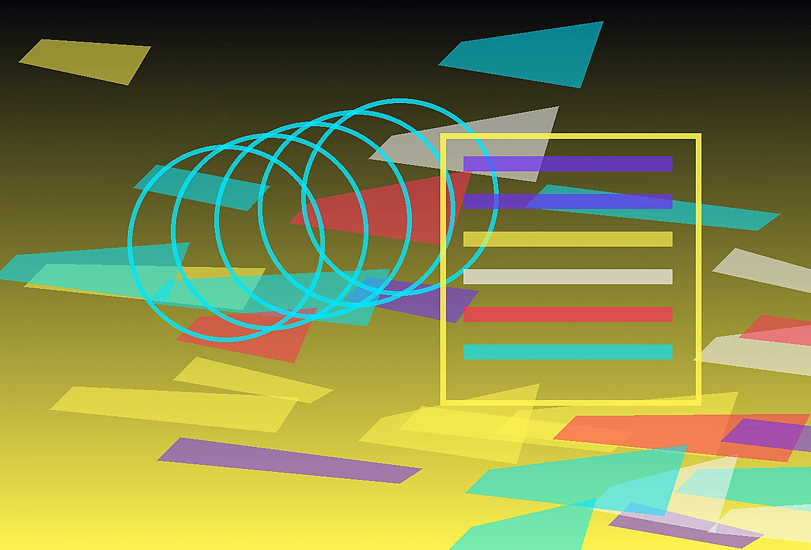
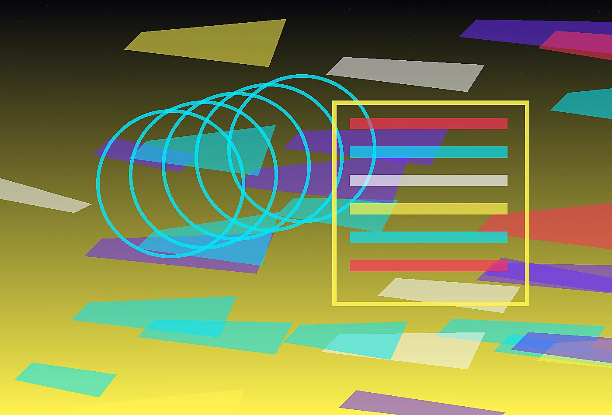
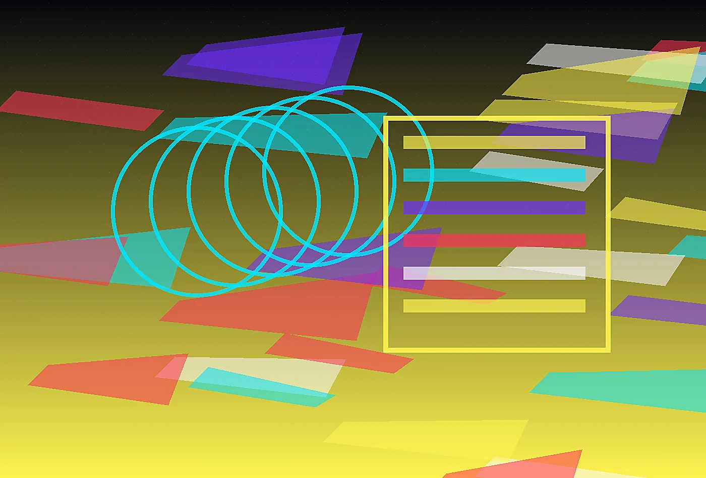

98fuel readiness index
Chromatic sports science command center
Blog at PulseForge
Read field essays, practical notes, and sharp perspectives from PulseForge. The journal is written for people who prefer useful specificity over generic trend language.
Ignite the kitchen
Journal notes with practical edges
The PulseForge journal collects essays for leaders who want clear thinking, fresh language, and grounded examples. Each piece is written to be read by busy people who still care about nuance.

Essay 01What elite teams learn when snacks are tracked like training
A short operational essay on noticing the point where a polished experience begins to fray, then repairing it with language, timing, and clearer ownership.
Discuss this idea 
Essay 02Building a race-week menu that survives delayed flights
A practical look at how teams can preserve ambition while removing the small confusions that waste energy during important moments.
Discuss this idea 
Essay 03Why recovery bars need chefs and data analysts
A field note about translating expert knowledge into cues that guests, athletes, residents, directors, or staff can use immediately.
Discuss this idea
What we are tracking
- Signals that reveal friction before complaints arrive.
- Small rituals that make premium experiences feel human.
- Operational writing that improves trust without adding noise.
- Material choices that carry meaning and survive use.
Receive the field letter
Once each month, we send a concise note with observations, questions, and examples from our work. It is written for decision makers who prefer substance over promotional noise.
Each recommendation is built for the pace of sport. We consider who opens the kitchen, who stocks the bus, who answers athlete questions, who approves substitutions, and who reviews spend after the adrenaline of competition has passed. That operating view keeps the work practical even when the visual system feels bold.
The work also includes adoption planning, because a brilliant menu system fails if athletes cannot understand it at speed or if kitchen teams cannot reproduce it on a difficult week. We build colorful cues, prep logic, substitution rules, and review habits that make the system resilient rather than dependent on one energetic launch.